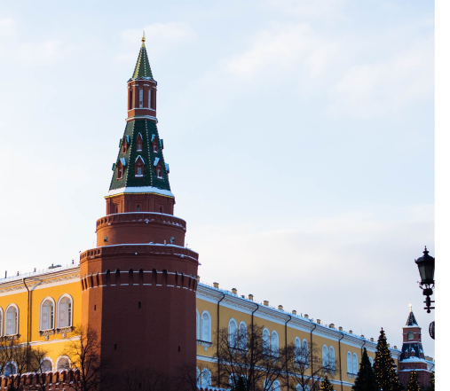
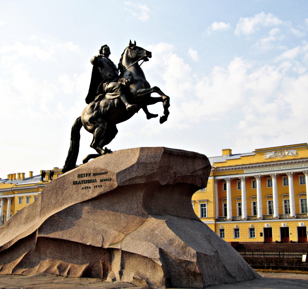
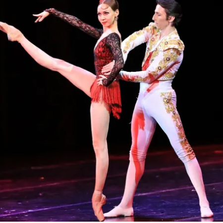

Москва
Санк-Петербург
Ростов-на-Дону
Нижний Новгород <
Увидь в Россие новое
Не большое путешествием по
гланым частям страны
Начнем с самго центра России

Москва - столица России и крупнейший город страны. Это огромный мегаполис, который является историческим, политическим и духовным сердцем Российской Федерации. Москва - крупнейшая столица Европы, наполненная достопримечательностями, памятниками истории и культуры, а также музеями мирового уровня. Это город невероятной динамики и размеров, который невозможно объять за одну поездку. Московский Кремль — крепость в центре Москвы и древнейшая её часть, главный общественно-политический и историко-художественный комплекс города, официальная резиденция Президента Российской Федерации, была официальной резиденцией Генерального секретаря ЦК КПСС.3 башни - круглые, 17 башен в Кремле - прямоугольные.Расположен на высоком левом берегу Москвы-реки — Боровицком холме, при впадении в неё реки Неглинной. В плане Кремль — неправильный треугольник площадью 27,5 гектара. Южная стена обращена к Москве-реке, северо-западная — к Александровскому саду, восточная — к Красной площади.
Узнать больше!
Не менее важный для нашей страны город Санк -Петрбург

Медный всадник — один из самых известных и узнаваемых памятников Петру I. Его воздвигли на Сенатской площади Санкт-Петербурга по указу Екатерины II. Сегодня это одна из главных городских достопримечательностей, которая упоминается во многих литературных произведениях, служит источником вдохновения для художников и украшает собой памятные монеты. Памятник Медный всадник, главный символ Северной Пальмиры, увековечивший Петра Великого на вздыбившейся лошади, был открыт 7 августа 1782 года. В честь долгожданного события состоялся военный парад, которым руководил князь Александр Голицын. Екатерина II на торжества прибыла в шлюпке по Неве. Поднявшись на балкон здания Сената, она надела корону и облачилась в порфир и подала знак, что праздник можно начинать. По горькой иронии судьбы, самого Фальконе на это мероприятие даже не соизволили пригласить.
Узнать больше!
Прекрасный город Растов-на-Дону

Музыкальный театр Ростова — один из самых старых в стране, он работает с 1919 года. В новое необычное здание в виде белого рояля он переехал в 1999 году. В комплексе площадью 37 тысяч кв. м две сцены — Большая и Камерная. Ежегодно здесь проходят порядка 300 самых разных постановок высокого уровня — опера, балет, симфонические концерты, мюзиклы, детские утренники. Большой любовью у публики пользуются постановки «Кармен», «Евгений Онегин», «Пиковая дама» и другие. Труппа театра довольно известна в стране и за рубежом, много гастролирует. Если вам не удастся попасть на представление, то хотя бы посетите музей и узнайте больше об истории театра.
Нижний но великий Новгород
Музей истории автомобильного завода «ГАЗ» — нижегородский музей знаменитого Горьковского автомобильного концерна, являющегося гордостью своего города. Музей представляет коллекцию редких автомобилей и большой фонд документов, основа которого – архивы работников ОАО «ГАЗ» разного времени. Так же здесь размещаются различные тематические выставки.Машины, оказывается, не просто железо на колесах — это великая история, патриотизм, судьбы людей и смысл жизни многих из них… Музей истории ГАЗ — одна из популярных достопримечательностей города, посещение которой будет увлекательным и познавательным. Теперь подробнее о том, где находится музей, о его экспозициях и выставках.